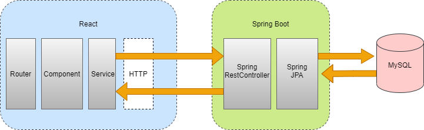
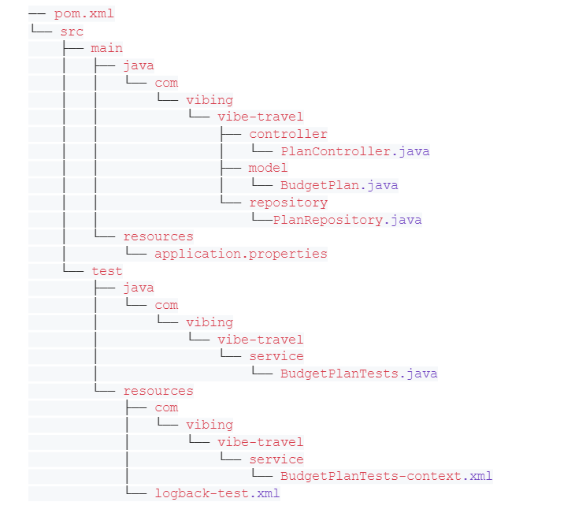
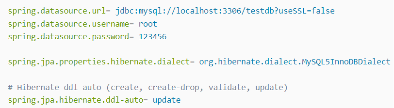
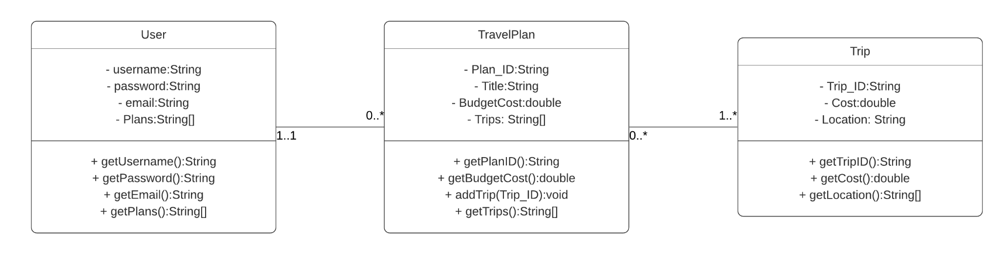
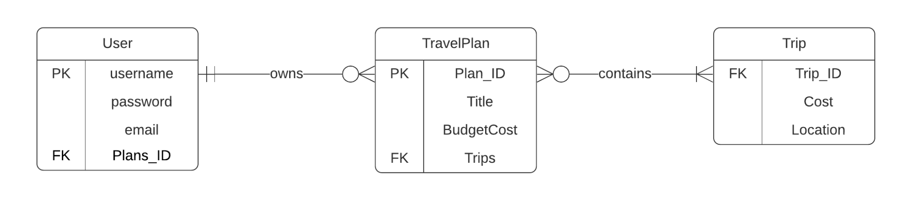
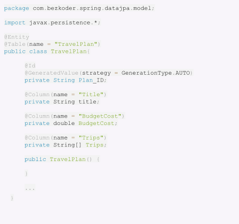
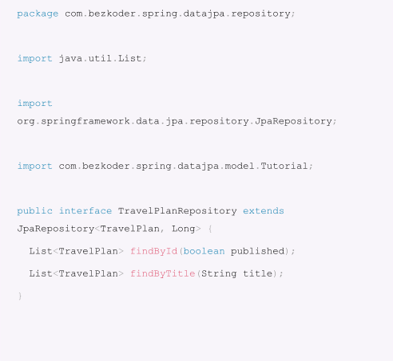
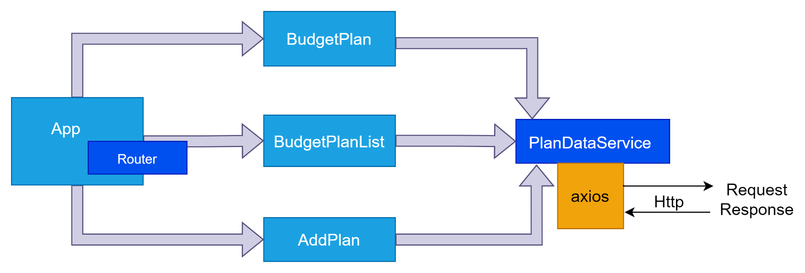

Plans and Progress
User Experience Requirement analysis
A requirement is a singular documented need of what a particular product or service should be or perform. It is a statement that identifies a necessary attribute, capability, characteristic, or quality of a system in order for it to have value and utility to a user. A requirement is a singular documented need of what a particular product or service should be or perform. It is a statement that identifies a necessary attribute, capability, characteristic, or quality of a system in order for it to have value and utility to a user. User Stories help getting the high-level picture of requirements. Acceptance criteria refer to a set of predefined requirements that must be met to mark a user story complete. Acceptance criteria are also sometimes called the “definition of done” because they determine the scope and requirements that must be executed by developers to consider the user story finished.
Acceptance Criteria and User story
| Feature | User story | Requirement analysis |
|---|---|---|
| Country Search | As an app user I want to be able to choose a country that I am interested in travelling to So that I can see price information about that country |
Given that I’m a user And I’m on the front page When I click on the select country field And I select a country Then the app will redirect me to that countries page showing a price index |
| Categories of goods and services in selected country | As a user I want to see travel specific costs of goods and services So that I can get a sense of how much it will cost to travel |
Given that I’m a user And I’m looking at the price index of my selected country When I look at the price of goods and services Then the presented price index will show travel related goods and services |
| Price budget options | As a user I want to have a guide of how much money I can budget if I want to spend more or less So that I can get a greater understanding |
Given that I’m a user And I want to see examples of budgets When I click on the ‘plan a budget’ field Then the app will present three budget options, low, medium, and high |
| User entered budget | As a user I want to enter the amount I am willing to spend So that I can see how my money will be divided among the expenses |
Given that I’m a user And I’m on the budget plan page When I select the ‘enter budget amount’ field And I enter an amount Then the app will divide the entered amount among the expenses |
| Category slider | As a user I want to prioritise certain expenses over others So I can remove unneeded expenses and get a better representation of my total cost |
Given that I’m a user And I’m on the budget plan page When I select the category sliders And move the sliders left or right Then the prices will increase or decrease based on the entered budget amount |
| Weekly expenditure | As a user I want to see how much it would cost for a week to travel So i can better visualise how much it would cost in total |
Given that I’m a user And I am on the budget page When I select ‘how many days are you travelling?’ And I enter the amount Then the page will display the total budget cost (daily budget * days entered) |
| Travel save feature | As a user I want to save my selected budgets So I can see budgets for more than one country |
Given that I’m a user And I have finished with my budget When I select the ‘Save budget plan’ field And I navigate to the saved budget page Then the app will display my saved budget plans, as well as adding the costs of them together |
| Profile page | As a logged out user I want to be able to sign into the website So that I can save and view my saved budget plans |
Given that I’m a logged out user And I’m on the sign in page When I fill in the username and password fields And click the sign in button Then the system signs me in |
User Interaction Design
Referring to the section above some identified features for a user include:
- Country search
- Categories of goods and services in selected country
- Category slider
- Travel save
- Profile page
- Price budget options
- User entered budget
- Weekly expenditure
The first step to designing an interface is creating context scenarios. To do this we create a scenario using a fake persona where the user engages with the application to achieve an end goal.
Scenario example – A young girl named Emily has been stuck in lockdown for months. She was considered an essential worker and has been saving her money through the pandemic. She hasn’t travelled much and doesn’t know what costs there are involved. Her dream is to travel to Japan and has saved $8000 in the past 6 months. Using the app, she will be able to navigate though it inputting her budget and country of interest which will be broken into 6 different categories of purchasing power and Emily will have a clear idea on budgeting for her trip.
We want the experience to be personal. Emily will have her own profile where she can see her saved journey plans and there will be a function where she can view other profiles and trips where she could find some inspiration.
| Scenario Step | User Interaction Requirement |
|---|---|
| Emily wishes to travel | Marketing and available information |
| Create account on mobile app | Sign up/ Sign in pages |
| Set Budget | Text field for whole dollar amount |
| Set Country of Interest | Search field for countries |
| Cost per day | Purchase power broken down into 6 categories the user can select and shows CPI |
| Save and view travel plan | Personal profile with minimal personal details and a saved trips section |
The next step is to construct key path scenarios. This comes from the context scenario driven from the user's needs. The following are the factors to take into consideration when creating a functional prototype:
- Form factor describes what system is available for the user for example an iPhone, android, or tablet.
- Posture shows the approach the application presents to the user. The vibe and feel the app presents is important and needs to reflect what the user is looking for. Professional with lots of imagery is an example for a travel app.
- Input Methods demonstrate how the user interacts with the application. This can be keyboard, voice search, touch.
In this step, brainstorming is required to create functional elements. A functional element is an element on the interface that responds to the functional need of the user. For example, if the user’s functional need was to see countries of the world without using the search bar, the functional element would be an interactive map. For this project InVision and Proto.io are tools that will be used to create a usable interface for this project. The goal is to achieve a high fidelity prototype which has its advantages and disadvantages:
| Advantages | Disadvantages |
|---|---|
| Completely functional and interactive | Time consuming |
| Look and feel of final product | Can be expensive to develop |
| User driven | Ineffective method for proof-of-concept designs |
Mind map of our basic layout:
{kind=link}
Our prototype on proto.io:


Above are a couple screenshots of our project. They are there to provide some insight to the elements and patterns used in the app. Firstly, the app opens to a beautiful image of Athens. As a travel app we want our user to be reminded and inspired about why they got the app. Throughout the app there is a lot of use of images which can be a powerful marketing tool as it encourages users to imagine future experiences.
The image on the right shows the use of the ‘sidebar navigation’ tool. The sidebar is usually depicted by 3 stacked horizontal lines and typically resides on the top left of the screen. This is a helpful feature for apps as screen sizes can be small and therefore the space needs to be utilized as best as possible, so a side bar tool is ideal to maximise efficiency.
Furthermore, scrollable attributes have been embedded to maximise content on the app. On select pages both vertical and horizontal scroll bars have been used. An important step in building an app’s architecture is developing a mental model, whether this is in the form of storyboarding, workflow diagrams or mind maps.
Software Architecture
We will first start by creating a CRUD (Create, Read, Update, Delete) app with minimal features and move on to the development of other app features at later phases. The back-end server uses Spring Boot with Spring Web MVC for REST APIs and Spring Data JPA for interacting with MySQL databases. Front-end side is made with React, React Router, Axios and Bootstrap.
This is the application architecture we’re gonna build:
Architecture of Spring Boot + React + MySQL CRUD application
- Spring Boot exports REST Apis using Spring Web MVC & interacts with Database using Spring JPA.
- React Client sends HTTP Requests and retrieves HTTP Responses using axios, shows data on the components. We also use React Router for navigating to pages.
- We use MYSQL as our database to manage our client data.
Spring Boot Rest Apis Back-end
Overview
These are APIs that Spring Boot App will export:
| Methods | URL | Actions |
|---|---|---|
| POST | /api/budgetPlan | Create new budget plan |
| GET | /api/budgetPlan | Retrieve all budget plans |
| GET | /api/budgetPlan/:id | Retrieve a budget plan by id |
| PUT | /api/budgetPlan/:id | Update a budget plan by id |
| DELETE | /api/budgetPlan/ | Delete all budget plans |
| DELETE | /api/budgetPlan/:id | Delete budget plan by id |
We make CRUD operations & finder methods with Spring Data JPA’s JpaRepository
Technology
- Java 8
- Spring Boot 2 (with Spring Web MVC, Spring Data JPA)
- MySQL
- Maven 3.6.1
Project Structure

Data model class corresponds to entity and table tutorials.
- PlanRepository is an interface that extends JpaRepository for CRUD methods and custom finder methods. It will be autowired in PlanController.
- PlanController is a RestController which has @requestmapping methods for RESTful requests such as: getAllPlans, createPlan, updatePlan, deletePlan, findByPlanID...
- Configuration for Spring Datasource, JPA & Hibernate in application.properties.
- pom.xml contains dependencies for Spring Boot and MySQL.
Implementation
- Create and Setup Spring Boot project
- Configure Spring Datasource, JPA, Hibernate
- spring.datasource.username & spring.datasource.password properties are the same as our database installation.
- Spring Boot uses Hibernate for JPA implementation, we configure MySQL5InnoDBDialect for MySQL
- spring.jpa.hibernate.ddl-auto is used for database initialization. We set the value to update value so that a table will be created in the database automatically corresponding to the defined data model. Any change to the model will also trigger an update to the table. For production, this property should be validated.
- Define Data Model
- @Entity annotation indicates that the class is a persistent Java class.
- @Table annotation provides the table that maps this entity.
- @Id annotation is for the primary key.
- @GeneratedValue annotation is used to define generation strategy for the primary key. GenerationType.AUTO means Auto Increment field.
- @Column annotation is used to define the column in the database that maps the annotated field.
- Create Repository Interface
- findById(): returns travel plan with id as input
- findByTitle(): returns all travel plans which title contains input title
- Create Spring Rest APIs Controller
- Run the Spring Boot Server
We will use Intellij to create a Spring Boot project. Then open pom.xml and add these dependencies:

We also need to add one more dependency for MySQL:

Under src/main/resources folder, open application.properties and write these lines.
First, we create a class diagram to show the static structure of a system, including classes, their attributes and behaviors, and the relationships between each class. We will be representing the relationships between user class and the relative app feature class in the class diagram below.
User Details
The users of our app have attributes like username and password for login verification and email address for password reset.
Journey Planning with Budgeting features
A user can have none or multiple travel plans. Each travel plan has an unique id, budget cost which is set by the user and an array which stores trips which are recommended by the system based on its cost. Trips in the travel plan can be edited through the editTrips() method. Users can access a trip's details such as its cost and location.
SQL tables
We create an entity relationship diagram (ERD) to show the relationships of entity sets stored in our database. An entity in this context is an object, a component of data. An entity set is a collection of similar entities. These entities can have attributes that define its properties. We will be using ER diagrams to sketch out the design of our database.
Let’s say our data model is TravelPlan with three fields: id, budget cost and trips.. In the model package, we define the TravelPlan class.
model/TravelPlan.java
Next, we create a repository to interact with TravelPlan from the database. In the repository package, create TravelPlanRepository interface that extends JpaRepository.

Now we can use JpaRepository’s methods: save(), findOne(), findById(), findAll(), count(), delete(), deleteById()… without implementing these methods.
We also define custom finder methods:
Finally, we create a controller that provides APIs for creating, retrieving, updating, deleting and finding Tutorials.
Run Spring Boot application with command: mvn spring-boot:run
React.js Front-end
Overview
- The App component is a container with React Router. It has a navbar that links to route paths.
- BudgetPlanList component gets and displays Tutorials.
- BudgetPlan component has a form for editing Tutorial’s details based on :id.
- AddPlancomponent has a form for submission of a new Tutorial.
- These Components call PlanDataService methods which use axios to make HTTP requests and receive responses.
Technology
- React Native
- react-router-dom 5.1.2
- axios 0.19.2
- bootstrap 4.4.1
Project structure

- package.json contains 4 main modules: react, react-router-dom, axios & bootstrap.
- App is the container that has Router & navbar.
- There are 3 components: TutorialsList, Tutorial, AddTutorial.
- http-common.js initializes axios with HTTP base Url and headers.
- TutorialDataService has methods for sending HTTP requests to the Apis.
- .env configures port for this React CRUD App.
Implementation
- Setup React.js Project
- Import Bootstrap into your React CRUD app
- Add React Router to React CRUD App
- Run the command: npm instal react-router-dom to add React Router to our React CRUD app.
- Open src/index.js and enclose the App component with a Browser Router object.
- Add a navbar to your React CRUD app
- Set up Axios for the React CRUD HTTP Client
- Install Axios using the command: npm instal axios.
- We create the http-common.js file in the src folder.
- Make a Data Service
- Run React CRUD App
Open cmd at the folder you want to save Project folder, run command: npx create-react-app react-crud. After the process is done. We create additional folders and files with css templates. The css template we planned to use is FlexStart. FlexStart is a creative, developer friendly, clean, lightweight and modern Bootstrap website template. FlexStart is created for individuals and companies who want to build websites for software, startup, mobile app, digital agency, SaaS, internet services, fintech and related services and products websites.
Run the following command: npm instal bootstrap.
Open src/App.js; this App component is the root container for our application; it will contain a navbar as well as a Switch object with multiple Routes. Each Route is associated with a React Component.
In this step, we'll build a service that sends HTTP requests using the axios object from earlier. To perform CRUD operations, we use the axios get, post, put, and delete methods, which correspond to HTTP requests: GET, POST, PUT, and DELETE.
We can run our React CRUD app with the command: npm start.
Deployment
We will deploy our Spring Boot Java app to Kubernetes on Google Kubernetes Engine:
- Setup a Google Cloud Project
- Clone source code into home directory
- Run our app locally using Maven
- Package the Java app as a Docker container
- Create our GKE cluster. A cluster consists of a Kubernetes API server managed by Google and a set of worker nodes. The worker nodes are Compute Engine VMs.
- Deploy our app to Kubernetes. A Kubernetes deployment can create, manage, and scale multiple instances of our app using the container image that you created.
- Allow external traffic.
- Scale our service. One of the powerful features offered by Kubernetes is how easy it is to scale your app. Suppose that you suddenly need more capacity for your app. You can simply tell the replication controller to manage a new number of replicas for your app instances.
- Upload our app to Google Play Store.